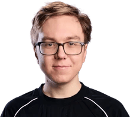

Simon Hofverberg
Player Profile
Biography
Simon "Baus" Hofverberg is an online personality and former professional League of Legends player. He was a top-laner for Los Ratones and known for his unique play-style, specifically dying multiple times to achieve gold-based objectives and reducing the amount of yield from future deaths. After a heartbreaking split in LEC Rivals, narrowly missing out on a play-off spot, Los Ratones, along with Baus, decided to hang up the gloves.